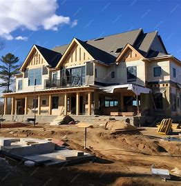

About Us

The Business started on September 15th,1995 in a rented premise founded by Mr.Geoffry Kinoti deriving the company name Kinoti GK Hardware. Only a small range of products were sold at the time. It was converted to a limited company in 2000 with Mrs.Jane Kinoti- wife to Mr.Geoffrey as co-director. By God`s Grace, the company acquired market acceptance and grew rapidly to relocate to its premise and round up employees to a staff of 30 staff Currently G.K Hardware Ltd is selling all building materials. Its customer base is in the larger Meru County.It serves all Kenyans even those in the diaspora. The company is reputed to be tax compliant and socially responsible.
Our Mission
To be the leading hardware supplier in the region by providing quality products and services to our customers.
Our Vision

To be the most trusted and reliable hardware supplier in Kenya.